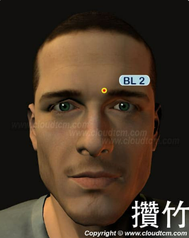

攢竹穴

位置：
面部眉頭陷中，當眶上切跡處
找穴步驟：
步驟一：用大拇指找到眉毛
步驟二：摸到眉毛內側最靠近鼻子的地方
步驟三：找尋凹陷處，按壓有輕微的酸脹感就是「攢竹穴」
找穴難度：
★☆☆（輕鬆一顆星，找穴道好簡單）
按摩手法：
用拇指按揉攢竹穴100~200次
穴道介紹：
用拇指按壓位於眉頭下方的「攢竹」穴，可以消除眼睛疲勞、改善乾眼問題，還可以幫助緩解頭痛、眉稜骨痛、三叉神經痛問題。
打嗝的時候按摩此穴道，也可以快速改善。
穴名介紹：
- 「攢竹穴」。「攢」，聚集也。「竹」，山林之竹也。本穴物質為睛明穴上傳而來的水濕之氣，因其性寒而為吸熱上行，與睛明穴內提供的水濕之氣相比，由本穴上行的水濕之氣量小，如同捆扎聚集的竹桿小頭一般，故名「攢竹穴」。
- 「眉本穴」。“眉”，穴所在的部位也。“本”，根本也。眉本名意指：本穴氣血為眉發的根本。眉發與人的頭髮、鬚髮一樣，它皆為血氣之餘物，由人的腎之所生、血之所養。
- 「始光穴」。“始”，開始也。“光”，光明也。始光名意指：膀胱經氣血在此由寒濕之狀變為陽熱之狀。本穴氣血為睛明穴傳來的寒濕水氣，至本穴後吸熱脹散而變為陽熱之氣，氣血的變化如同從黑暗處來到光明處一般，故名始光。夜光、明光、光明、矢光、矢元名意與始光近同。
- 「員在穴」。“員”，周圍之意。“在”，存在也。員在名意指：本穴氣血聚集於穴周，所處的範圍不太大。本穴物質為睛明穴傳來的水濕之氣，至本穴後，雖吸熱脹散，但所擴散的範圍不太大，故名員在。員柱名意與員在同。